Início
Jogos
Sobre mim
O site com
os melhores jogos antigos que você já jogou
Jogos
SNAKE
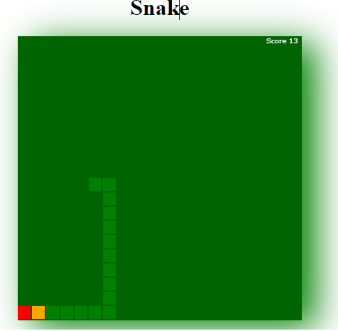
O objetivo do jogo e atingir uma cobra de maior dimensao possivel. O jogo chega ao fim quando a cabeça da cobra encostar em qualquer parte de seu corpo ou se o jogador decidir encerra lo.
O conceito do jogo da cobrinha ja existia bem antes da era dos celulares. Ele apareceu pela primeira vez em 1975 no jogo para arcades Blockade, desenvolvido pela Gremlin Industries. Diferente do game da Nokia, Blockade foi feito para dois jogadores
JOGO DA VELHA
JOGO DA VELHA e tambem um jogo popular e pode ser conhecido por outros nomes diferentes como: jogo do galo ou três em linha. A origem e desconhecida, mas há registros de tabuleiros esculpidos na rocha no Egito, que teriam mais de 3.500 anos. Contudo, algumas lendas urbanas contam que o jogo teria nascido em Portugal.
PING PONG
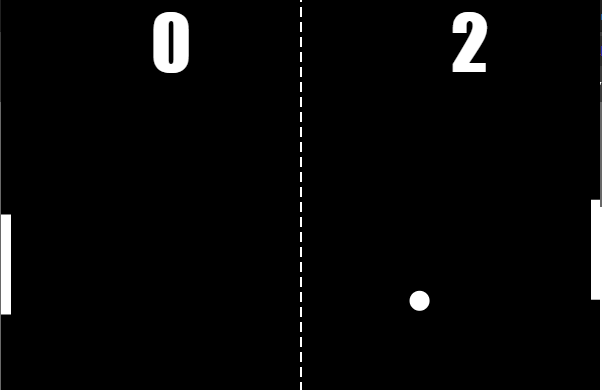
Pong e um game de esporte desenvolvido e publicado pela Atari em 1972. Com uma proposta simples que lembra a dinamica do pingue pongue, o titulo marcou a historia dos videogames por ser o primeiro jogo lucrativo da historia. Conheça Pong, um dos classicos mais significantes da industria de jogos.
Idealizado por Allan Alcorn e lançado para rodar inicialmente apenas em maquinas arcade, Pong tornou se o primeiro jogo comercialmente bem sucedido. Na decada de 1970, a Atari mostrou que jogo de videogame era capaz de gerar receitas significativas para empresas de entretenimento.
PONG PING
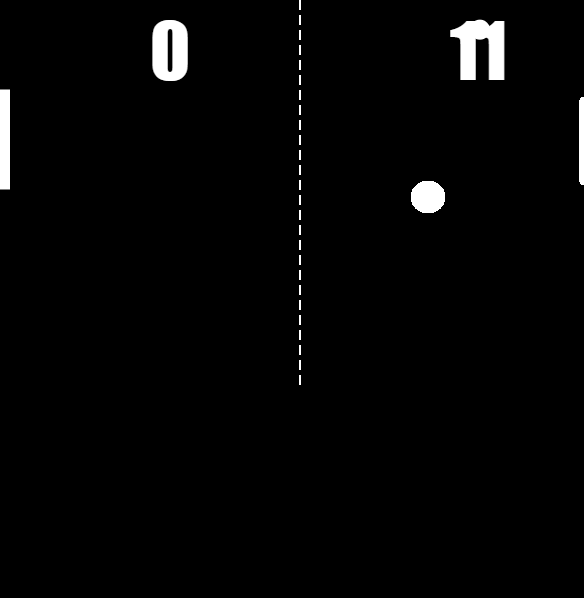
Ping Pong e um game de esporte desenvolvido e publicado pela Atari em 1972. Com uma proposta simples que lembra a dinamica do pingue pongue, o titulo marcou a historia dos videogames por ser o primeiro jogo lucrativo da historia. Conheça Pong, um dos classicos mais significantes da industria de jogos.
Idealizado por Allan Alcorn e lançado para rodar inicialmente apenas em maquinas arcade, Pong tornou se o primeiro jogo comercialmente bem sucedido. Na decada de 1970, a Atari mostrou que jogo de videogame era capaz de gerar receitas significativas para empresas de entretenimento.
BATALHA ESPACIAL
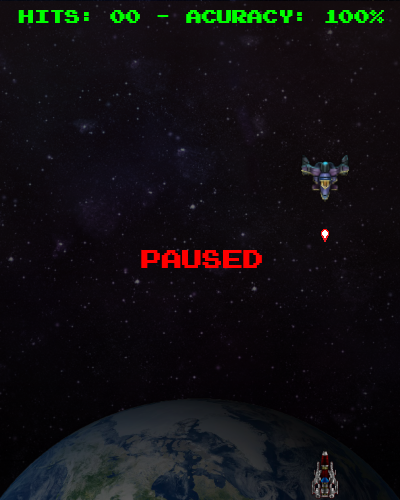
BATALHA ESPACIAL
o objetivo do jogo e proteger a terra porque os alienigenas querem invadir a terra, virao 100 naves alienigenas espaço ou botao canhao de plasma para atirar
MINA ESPACIAL
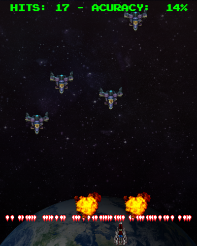
MINA ESPACIAL
Esse jogo é parecido com o batalha espacial, mas a regra é diferente! ao inves de atirar plasma nas naves quando apertar o botão ou tecla para atirar que é espaço ou botão canhão de plasma a nave deixa uma mina espacial dai o nome do jogo que se a nave alienigena passar por cima ela vai explodir
tele-bomba
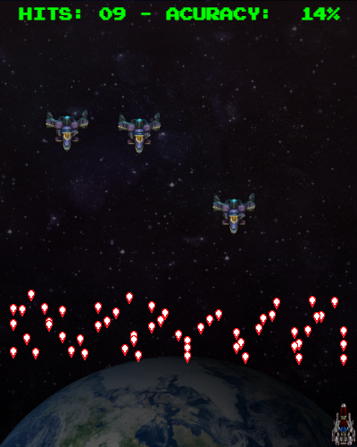
tele-bomba
Esse jogo é parecido com a Batalha espacial, mas a regra é diferente! ao inves de atirar plasma nas naves e andarem super rapido, esse jogo a nave quando atira solta uma bomba guiada que anda devagar,dica: desta vez virão 300 naves alienigenas então é melhor meter tiro em tudo. Mas os controles são iguais
FLAPPY BIRD
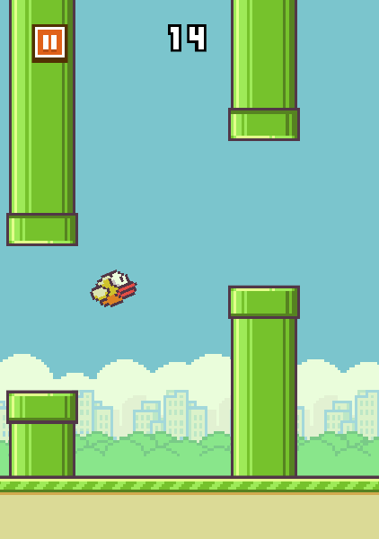
Flappy bird e um jogo que tem um passarinho e o objetivo do jogo e voce desviar dos canos e chegar no numero mais alto
BOLINHA AMARELA
Bolinha amarela e um jogo novo tambem. O objetivo e pular os muros e chegar no numero mais grandes de muros pulados, voce tem 6 vidas e 4 pulos
TETRIS
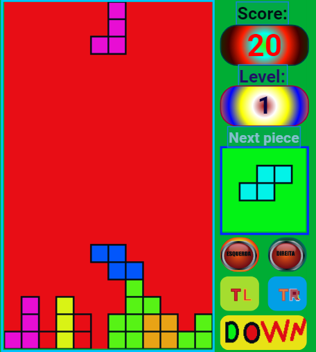
O jogo Tetris nasceu na antiga Russia, em junho de 1984, e foi desenvolvido pelo cientista russo Alexey Pajitnov no Centro de Computação da Academia Russa de Ciências (Russian Academy of Sciences). Em plena Guerra Fria, Pajitnov se inspirou em um jogo de tabuleiro de origem grega, chamado Pentominoes, para criar o game.
COLOR BLAST
Color blast e um jogo,que nele voce e uma barra vermelha. O objetivo do jogo e atirar nas outras barras e nao deixar que elas atirem em voce, e tambem chegar no maior numero de pontos que la vai estar escrito score.
T REX
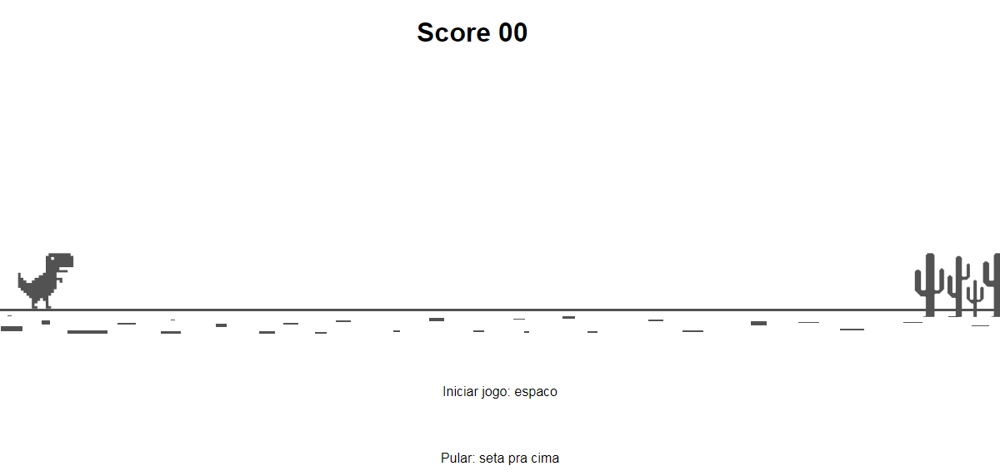
Color blast e um jogo,que nele voce e uma barra vermelha. O objetivo do jogo e atirar nas outras barras e nao deixar que elas atirem em voce, e tambem chegar no maior numero de pontos que la vai estar escrito score.
atari breakout
Breakout é um jogo eletrônico para arcade desenvolvido pela Atari, Inc e lançado em 13 de maio de 1976. Foi idealizado por Nolan Bushnell e Steve Bristow e influenciado pelo jogo de arcade de 1972 Pong, também da Atari. O jogo foi convertido para os consoles e atualizado como Super Breakout.
SPACE SHOOTER
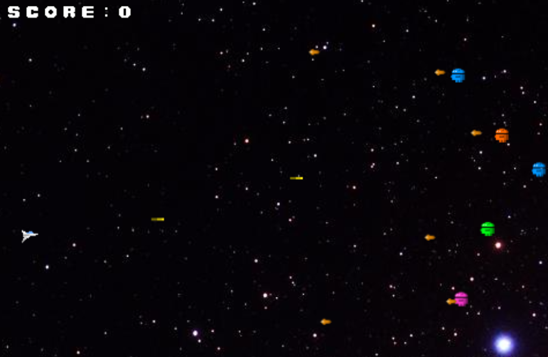
A primeira ideia do jogo, segundo o designer japonês, veio a partir de um sonho que teve sobre invasão de alienígenas, Toshihiro criou Space Invaders, em que uma bateria antiaérea controlada pelo jogador na base da tela atirava em alienígenas que se aproximavam da Terra.
SPACE INVADERS
Space Invaders foi um dos primeiros jogos de tiro com gráfico bidimensional. O objetivo é destruir ondas de naves com uma espaçonave humana para ganhar o maior número de pontos possível. Para construir o jogo, Nishikado se inspirou na mídia popular, como A Guerra dos Mundos e Star Wars.
JOGO DA FORCA
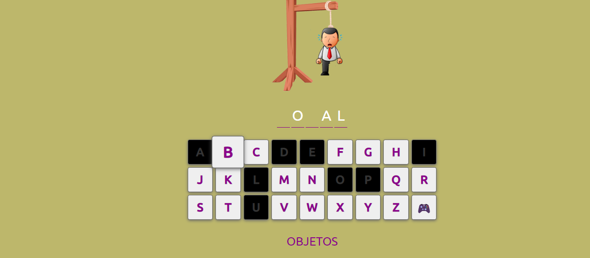
A cada letra errada, é desenhado uma parte do corpo do enforcado. O jogo termina ou com o acerto da palavra ou com o término do preenchimento das partes corpóreas do enforcado. Para começar o jogo se desenha uma base e um risco correspondente ao lugar de cada letra.
MENJA
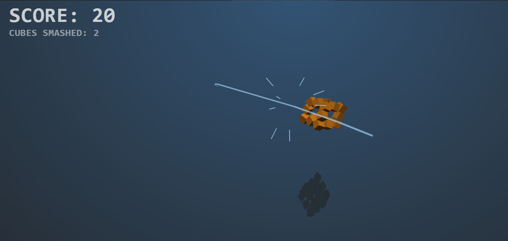
Menja é um jogo que nele voce tem que cortar quadrados com a seta ou dedo, sem deixar cair nenhum bloco não cortado.
planet defense
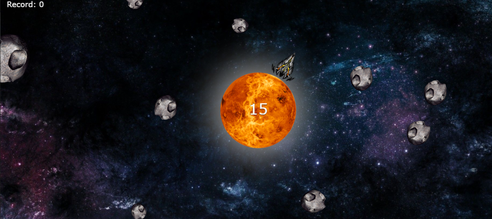
planet defense é um jogo que voce é uma nave e voce tem que atirar nos meteoros para eles nao colidirem no planeta desconhecido.
SUPER MARIO BROS
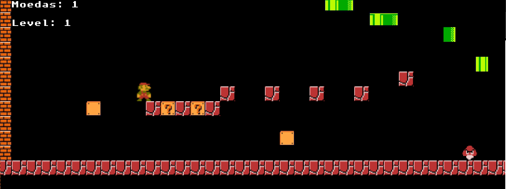
Super Mario Bros. foi lançado pela primeira vez no Japão em 13 de setembro de 1985, para o Family Computer. Foi lançado mais tarde naquele ano na América do Norte para o Nintendo Entertainment System (NES).
BOMBER MAN
BomberMan e uma franquia de jogos de estrategia/aventura, criada pela Hudson. O primeiro game foi lançado originalmente para PC no Japao, e depois foi inportado para famicom em 1983; o porte foi feito por apenas uma pessoa em 72 horas, Shinichi Nakamoto foi o esponsavel.
START REATOR
START REATOR É UM JOGO NOVO QUE TEM NO AMONG US.
.png)